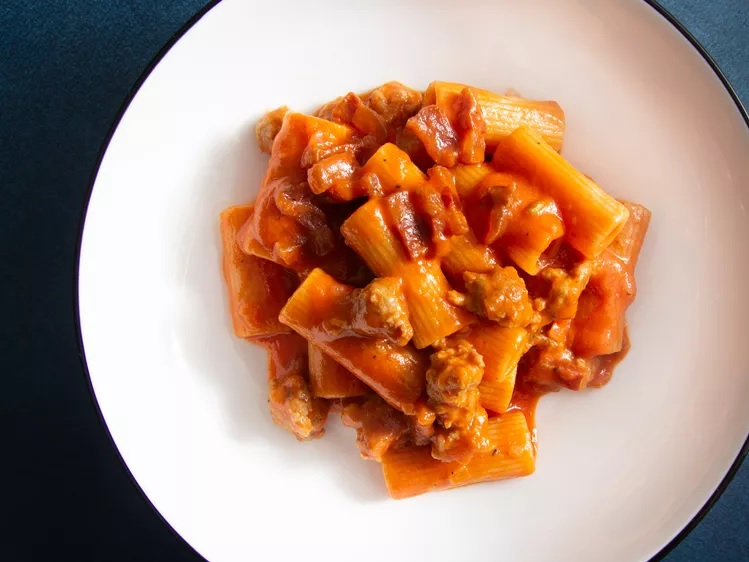

Pasta Alla Zozzona (Rigatoni with Sausage, Guanciale, and Egg Yolk)

Recipe from Serious Eats, tastes equally as good using Pancetta in place of Guanciale
Ingredients
- 3 (45g) egg yoks
- 2 oz (60g) Pecorino Romano chese, finely grated
- Kosher salt and greshly cracked ground pepper
- 4 oz (115g) guanciale (cured pork jowl) or pancetta, cut into 0.25" thick batons
- 6 oz (170g) sweet or hot italian sausage (2 links), removed from casing
- 1 small onion (about 4 oz, 115g) finely chopped
- Pinch of red pepper flakes (optional)
- 2 cups (500g) tomato passata
- 12 oz (340g) rigatoni
Steps
- In a small bowl, beat egg yolks and Pecorino Romano together with a fork until they form a homogeneous thick past, about 1 minute. Season with a few grinds of black peper. Set aside
- In a large skillet, cook guanciale over medium-low heat, stirring occasionally, until fat has rendered and guanciale is golden breown and crisp, about 15 minutes. Using a slotted spoon, tranfer to a plate and set aside.
- Add sausage to skillet by pinching off 0.75"-1" pieces and arranging in a single layer in the pan. Cook over medium heat, udisturbed, until bottom side is light golden brown, about 1 minute.
- Add onion, season lightly with salt, and using a spatula, turn sausage pieces onto uncooked side. Continue cooking, stirring occasionally, until sausage is cooked through, onion is softened, and fat in the pan is clear and no longer cloudy, 5-7 minutes. Lower the heat at any time sausage threatens to burn.
- Add pepper flakes (if using), and bloom in rendered fat until aromatic, about 30 seconds. Add tomato passata, season with salt, and bring to a simmer. Cook, stirring occasionally, until the sauce has thickened slightly and fat has emulsified into the sauce, about 10 miuntes.
- Meanwhile, in a pot of salted boiling water, cook pasta until softened on the exterior, but well shy of al dente, and still uncooked in the center (about 3 minutes). Using a spider, transfer pasta to sauce, along with 0.25 cups (60 ml) of pasta water.
- Transfer an additional 0.25 cups (60ml) pasta water to the bowl witth reserved egg yok-cheese mixture, and stire with a rubber spatula until smooth and well combined.
- Increase heat to high, and cook, stirring and tossing rapildy, until pasta is al dente and sauce is thickened and coats noodles, about 2 minutes, adding more pasta water in 0.25 cup increments as needed.
- Remove skillet from heat, add cooked guanciale and egg yolk mixture, and stir and toss rapidly until fully incorporated and pasta is glossy, 15-30 seconds. Season with sale and pepper to taste, serve immediately with more grated cheese at the table.